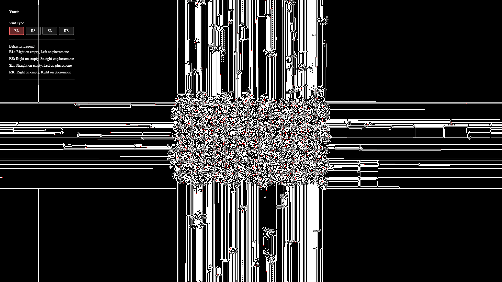

Langton's Ants (Vants)
Objective:
Implement different behaviors for different ant types.
Experiment and find interesting patterns that come out.
Project Image:

Explaination:
I implemented four types of vants - RL, RS, SL, and RR.
The first character corresponds to the ant action when moving onto an empty cell – Right, Left, or Straight.
The second character is what the ant will do while on the pheromone cell.
The pattern these vants create tends to be a dense core in the middle of screen,
and thin arrays going out in the north, south, east, and west directions.
I added the feature to switch the vant type during the simulation,
and it’s interesting to see the new vant operating on the canvas already drawn by a different algorithm.
For example, when the current vant switches from RL to RS, it’s almost if the simulation is going backward.
The thin arrays in the four directions would retract, and the dense core slowly expands.
On the other hand, if RR is switched to from other vants, the ants would get stuck inside the core and they appear to be glitching.
Those two are the most unique transitions; there are also other interesting examples to explore.
This assignment uses standard WebGPU setup instead of gulls for me to be more familiar with the language.
Otherwise, the implementation code is very similar to the provided example, and I enjoy this mini project.